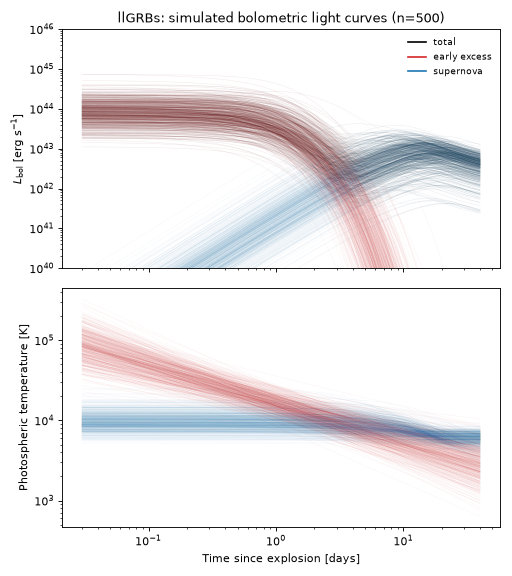
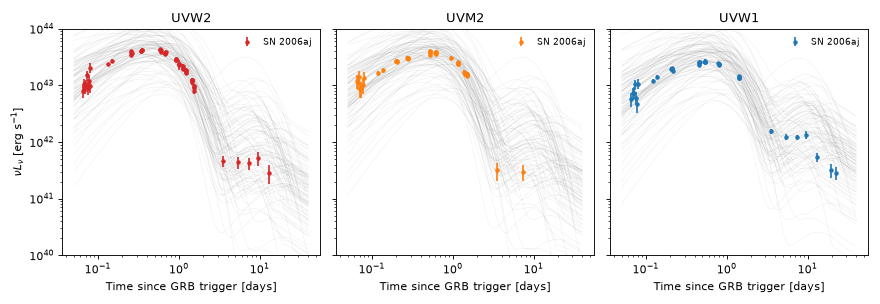
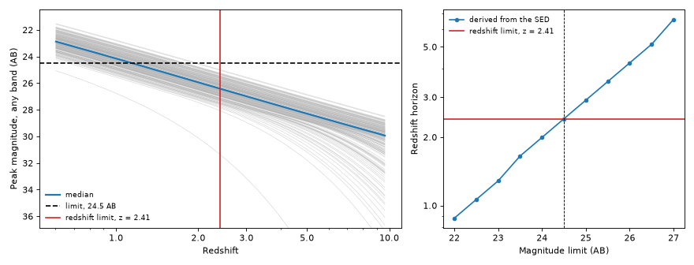
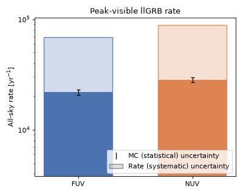

Low-Luminosity GRBs#
Low-luminosity gamma-ray bursts (llGRBs) are sub-energetic, long GRBs, typified by GRB 060218 (XRF 060218), which exploded at \(z=0.0335\) (\(d=145\) Mpc) together with the broad-lined Type Ic SN 2006aj. Soderberg et al.[1] find that such events are about 100 times less energetic than cosmological GRBs, with \(\sim10^{48}\) erg in mildly-relativistic ejecta, and about ten times more common. In UV and optical light an llGRB is a two-part event: an early, hot, fast-fading thermal excess that the Swift/UVOT light curves of SN 2006aj show peaking within the first day, which Campana et al.[2] interpret as the break-out of the shock through the dense wind around the progenitor, followed by the radioactively powered supernova peaking about ten days later. The model below has one component for each.
This population is implemented by
LowLuminosityGRB, pairing
LLGRBSED with the rate/duration metadata described below.
Quick Facts#
Quantity |
Value |
Source |
Notes |
|---|---|---|---|
Rate |
\(230\ \mathrm{Gpc^{-3}\,yr^{-1}}\) (constant in \(z\)) |
Soderberg et al.[1] |
The local rate of sub-energetic GRBs, with a 90% confidence range of \(40\)-\(720\
\mathrm{Gpc^{-3}\,yr^{-1}}\) (+490/-190), adopted as
|
Redshift limit |
\(z = 2.41\) |
– |
Redshift beyond which, with 95% confidence, at most 1% of events drawn from the SED’s priors are brighter than 24.5 AB (the UVEX 1 Dwell limit) in either UVEX band, rounded up. It is set by the bright tail of the priors on the early excess, and the typical draw is detectable only to \(z\sim1\). See the observability summary below. |
Duration |
30 days |
– |
Generous: the early excess is bright for about a day, and fewer than 1% of events (weighted by volume) have any epoch brighter than 24.5 AB beyond 30 days. |
Rate: what it is, and what it is not
Soderberg et al.[1] estimate the rate from the two sub-energetic events caught by the gamma-ray missions that localize bursts, GRB 980425 (\(d=36\) Mpc) and XRF 060218. For each of BeppoSAX (Wide Field Cameras), HETE-2 (Wide Field X-ray Monitor) and Swift (BAT) they compute how far away each event could have been detected (\(\sim60\)-\(220\) Mpc), and combine that volume with the instrument’s sky coverage and operating time. The quoted uncertainty is dominated by the Poisson statistics of two detections.
A true rate. They argue that sub-energetic GRBs cannot be strongly beamed, since otherwise the rate would exceed the local rate of all Type Ibc supernovae, \(9^{+3}_{-5}\times10^{3}\ \mathrm{Gpc^{-3}\,yr^{-1}}\). No beaming correction is applied here, and every event is sampled.
Comparison. It is about ten times the rate of typical bright GRBs, taking a mean inverse beaming factor \(\langle f_b^{-1}\rangle\sim100\) for those. It is also comparable to the rate of broad-lined Ic supernovae, and the paper constrains events with strong early radio emission like these to \(\lesssim300\ \mathrm{Gpc^{-3}\,yr^{-1}}\), consistent with the llGRB rate.
Not in the uncertainty range. The range is statistical. It does not cover extrapolating a rate measured at \(d\lesssim200\) Mpc to the redshift limit above, which is the largest systematic of the population, and the volume grows with the cube of the limit.
SED Model#
LLGRBSED sums two blackbody components,
where \(S_\mathrm{BB}\) is a unit-integral blackbody shape. The supernova term \(L_\mathrm{SN}\) is the
Arnett diffusion light curve of ArnettDecaySED, powered by
\(^{56}\mathrm{Ni}\) decay, with its floored photospheric temperature and no line blanketing. The early
excess is a Bazin pulse with a power-law photospheric temperature,
For the default priors the Bazin maximum is before the burst, so the excess is already declining at \(t=0\). The rise of the UV light curves over the first \(\sim0.5\) d is the photosphere cooling, not a rise in the bolometric luminosity.
The supernova priors are those of TypeIcBLSED, the Ic-BL
population of Srinivasaragavan et al.[3] (see Type I (Stripped-Envelope) Supernovae). They are not tuned to any llGRB.
The priors on the early excess are centered on a fit to the Swift/UVOT UVW2, UVM2 and UVW1 light curves of
SN 2006aj, the only GRB-associated supernova in the packaged Swift/UVOT archive. They are not a population
estimate, and their widths are judgment, not measured scatter.
Parameter |
Symbol |
Prior |
Notes / Source |
|---|---|---|---|
|
\(M_\mathrm{Ni}\) |
TruncatedNormal(mean=0.33, \(\sigma\)=0.24, 0.02-2) \(M_\odot\) |
Nickel-56 mass. Ic-BL population [3]. |
|
\(M_\mathrm{ej}\) |
TruncatedNormal(mean=2.54, \(\sigma\)=1.95, 0.1-10) \(M_\odot\) |
Ejecta mass. Ic-BL population. |
|
\(v_\mathrm{ej}\) |
TruncatedNormal(mean=20.1, \(\sigma\)=4.96, 5-45) \(10^3\) km/s |
Ejecta velocity, taken as the photospheric velocity. Ic-BL population. |
|
\(\kappa\) |
Uniform(0.05, 0.15) \(\mathrm{cm^2\,g^{-1}}\) |
Grey optical opacity. |
|
\(\kappa_\gamma\) |
Constant(1000) \(\mathrm{cm^2\,g^{-1}}\) |
High-energy opacity, fixed at a large value (full gamma-ray trapping). |
|
\(T_\mathrm{floor}\) |
TruncatedNormal(mean=6000, \(\sigma\)=1000, 3000-10000) K |
Minimum photospheric temperature of the supernova. |
|
\(A\) |
Normal(\(\log_{10}(A/\mathrm{erg\,s^{-1}})\); mean=44.19, \(\sigma\)=0.3) |
Bazin normalization of the early excess. Fit to SN 2006aj. |
|
\(t_0\) |
Normal(\(\log_{10}(t_0/\mathrm{d})\); mean=-1.0, \(\sigma\)=0.25) |
Bazin transition time. Unconstrained between 0.03 and 0.3 d by the fit, so the prior is wide. |
|
\(\tau_\mathrm{rise}\) |
Normal(\(\log_{10}(\tau_\mathrm{rise}/\mathrm{d})\); mean=-0.34, \(\sigma\)=0.1) |
Bazin rise timescale. Fit to SN 2006aj. |
|
\(\tau_\mathrm{fall}\) |
Normal(\(\log_{10}(\tau_\mathrm{fall}/\mathrm{d})\); mean=-0.16, \(\sigma\)=0.1) |
Bazin decline timescale. Fit to SN 2006aj. |
|
\(T_1\) |
Normal(\(\log_{10}(T_1/\mathrm{K})\); mean=4.21, \(\sigma\)=0.1) |
Photospheric temperature of the excess at 1 d. Fit to SN 2006aj. |
|
\(\alpha_T\) |
Normal(mean=0.48, \(\sigma\)=0.1) |
Cooling power-law index of the excess. Fit to SN 2006aj. |
Caveats of the calibration
One event. The early excess is calibrated to SN 2006aj alone. The fit reproduces its UVOT light curves to about 0.08 dex rms, with \(\kappa\), \(\kappa_\gamma\) and \(T_\mathrm{floor}\) held at their prior values. The supernova it implies, \(M_\mathrm{Ni}\simeq0.15\)-\(0.2\,M_\odot\) and \(M_\mathrm{ej}\simeq1.2\,M_\odot\), lies inside the Ic-BL priors, but only the late UV tail constrains it. \(v_\mathrm{ej}\) is left free between \(1.7\times10^4\) and \(4\times10^4\) km/s.
Luminosity and temperature are degenerate. Before \(\sim0.2\) d the excess is hot enough (\(T\gtrsim4\times10^4\) K) that the UV bands lie on the Rayleigh-Jeans side of the blackbody, where \(L_\nu\propto L_\mathrm{bol}T^{-3}\). The UV fixes only that combination, so the bolometric luminosity of the excess, about \(8\times10^{43}\) erg/s at the first UVOT epoch of 0.065 d, follows from the assumed power-law temperature. No bolometric data constrain it.
No line blanketing in the supernova. Its blackbody is not suppressed in the UV as the Type Ic-BL model’s is, so its UV tail is set by the UVOT data of one event alone.
Only the thermal emission. The prompt gamma-ray and X-ray emission and the afterglow are not modeled, and there is no host or Milky Way extinction.
Simulated Light Curves#
The plot below draws 500 random parameter realizations from the priors above and shows the bolometric light curve and the photospheric temperature of each component. The early excess dominates for the first three days or so, and the supernova takes over afterwards.
(Source code, png, hires.png, pdf)



The second plot compares 100 draws with the Swift/UVOT UVW2, UVM2 and UVW1 light curves of SN 2006aj, from the Swift Optical/Ultraviolet Supernova Archive (SOUSA), timed from the GRB trigger. Each draw is integrated through the UVOT transmission curve from the SVO Filter Profile Service at the redshift of SN 2006aj, and both are shown as \(\nu L_\nu\) in the observed band with no K-correction. The early excess is calibrated to these data, so the agreement is a check of the fit and not an independent test, and the spread of the draws is the width of the priors.
(Source code, png, hires.png, pdf)



Observability Summary#
The plots below show how the redshift limit follows from the SED. We draw 1000 sets of parameters from the priors above and evaluate each of them across a grid of redshifts, in the UVEX FUV and NUV bands, over the whole rest-frame light curve. The left panel shows each draw’s peak apparent AB magnitude, in whichever band is brighter, against redshift: a draw is detectable out to the redshift where its line crosses the UVEX 1 Dwell limit of \(m<24.5\). The right panel shows the redshift beyond which, with 95% confidence, at most 1% of the population is detectable, as a function of the magnitude limit. The redshift limit adopted above, \(z=2.41\), is its value at \(m=24.5\), rounded up and derived on a finer grid than this plot’s.
The limit bounds the fraction of the population that is detectable beyond it, not the fraction of detected events, and it does not include Milky Way extinction or sky position. It is set by the bright tail of the draws, which the broad priors on the amplitude and temperature of the early excess make long: the median draw crosses the limit near \(z\sim1\), and only the brightest 1% reach the adopted redshift limit.
(Source code, png, hires.png, pdf)



The anticipated rate of llGRBs detectable by UVEX at these limits is as follows, assuming that any event whose brightest epoch in the first 30 observer-frame days is above the \(m<24.5\) limit is detectable, and that the population is isotropic and homogeneous in comoving volume out to \(z=2.41\):
(Source code, png, hires.png, pdf)



These rates are upper bounds on what UVEX will see. They count every event that is above the limit at its brightest epoch, with no survey cadence, footprint or exposure, so they say how many llGRBs are bright enough, not how many are observed. They also extrapolate the local rate of Soderberg et al.[1] to \(z=2.41\): most of the volume, and so most of the events, lie at \(z\gtrsim0.5\), far beyond the \(d<200\) Mpc that rate was measured in. The systematic band is the 90% range of that local rate only.